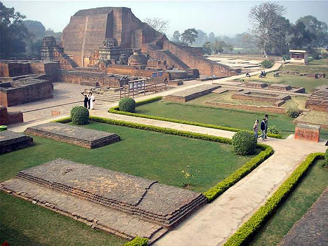
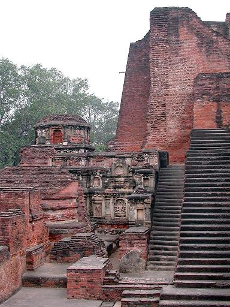
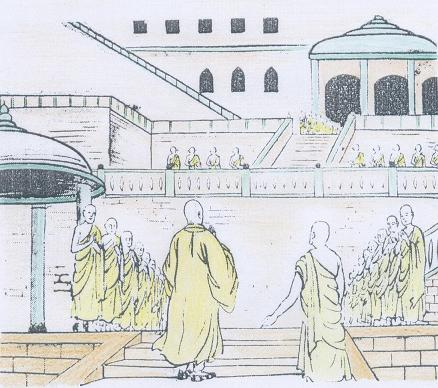
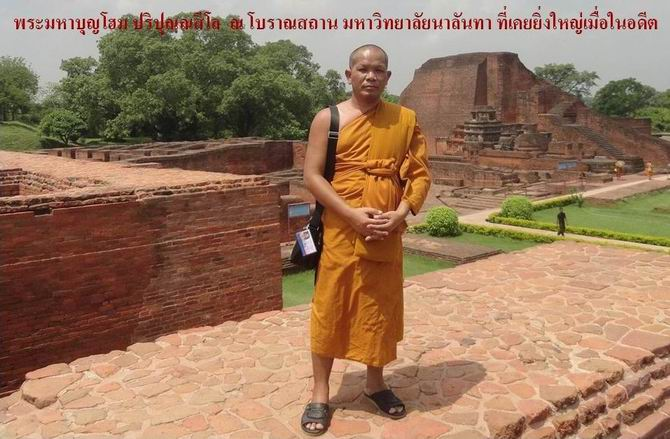

|
มหาวิทยาลัยนาลันทา
มหาวิทยาลัยสงฆ์แห่งแรกของโลก ************ |
|
 � นาลันทาในปัจจุบัน
ต่อมา ก็มีการก่อสร้างส่วนอื่นๆ เพิ่มเติมขึ้นมา อีกมากมาย ตลอดระยะเวลา อันยาวไกล นับตั้งแต่พระเจ้าแผ่นดิน ในราชวงศ์คุปตะ, ราชวงศ์ปาละ และพระเจ้าแผ่นดินแห่งชวา สุมาตรา อินโดนีเซีย เป็นต้น. ราวพุทธศตวรรษที่ 7-8 นาคารชุน คณาจารย์ผู้ยิ่งใหญ่ แห่งลัทธินิกายมหายาน ได้เดินทางไป ยังปูชนียสถานสำคัญๆ หลายแห่ง พร้อมกับท่าน อารยเทวะ ผู้เป็นศิษย์ แล้วท่านก็ได้เดินทาง มาถึงนาลันทา. ภายในระยะเวลาเพียง 1-2 ศตวรรษ จากเวลา ที่ท่านนาคารชุน เดินทางมาถึงนาลันทา. ต่อจากนั้น นาลันทา ก็ได้กลายเป็นศูนย์กลาง แห่งพระพุทธศาสนา นิกายมหายาน ที่สำคัญยิ่ง. ขณะนั้น มหาวิทยาลัยนาลันทา กำลังเจริญรุ่งเรืองเต็มที่. ต่อมา ในราวพุทธศตวรรษที่ 9 ได้เกิดคณาจารย์ที่สำคัญ ของนิกายมหายานขึ้น อีกท่านหนึ่ง นามว่า อสังคะ ท่านผู้นี้ เป็นผู้ประกาศหลักธรรม ลัทธิโยคาจาร ท่านได้ใช้ช่วงเวลา 12 ปีสุดท้าย แห่งชีวิตของท่าน ที่นาลันทาแห่งนี้. เมื่อพระภิกษุอสังคะ ได้มรณภาพลง น้องชายของท่าน มีนามว่า ภิกษุวสุพันธ์ ผู้เป็นนักปราชญ์ คนสำคัญ แห่งลัทธิโยคาจาร ได้เป็นประธานสงฆ์ บริหารมหาวิทยาลัยนาลันทา สืบต่อมา. ในสมัยคุปตะ ซึ่งจัดเป็นยุคทอง แห่งประวัติศาสตร์ของอินเดีย ในยุคนี้ มีพัฒนาการในด้านต่างๆ เกี่ยวกับ ชีวิต วัฒนธรรม และแนวความคิด ทางศาสนา ของอินเดีย ได้เป็นไปอย่างกว้างขวาง. หลักฐานจากศิลาจารึก
ตลอดจนหลักฐาน ทางโบราณคดี ได้เปิดเผย ให้เห็นถึง ความเจริญรุ่งเรืองสูงสุด
ของพระพุทธศาสนา ในยุคนี้ แม้ว่าพระพุทธศาสนา จะไม่ได้เป็น ศาสนาทางราชการ
ตลอดทั่วทุกแคว้น ในมัชฌิมประเทศ.  ซากปรักหักพังของนาลันทามหาวิหาร อาจทำให้เรานึกได้ว่า ครั้งหนึ่งพระพุทธศาสนาในอินเดียได้เจริญรุ่งเรืองอย่างสูง แต่ก็ได้ผันผวนตกต่ำลงไปตามหลักเหตุปัจจัย อันเป็นหลักสำคัญในพุทธธรรมนั่นเอง
ในสมัยของหลวงจีนเฮียงจัง
ราวพุทธศตวรรษที่ 12-13 นั้น, พระเจ้าหรรษวรรธนะ ทรงเป็นองค์อุปถัมภก
ที่สำคัญยิ่ง ของพระพุทธศาสนา นักศึกษาแห่งนาลันทา
ไม่ต้องมีความกังวล เกี่ยวกับเรื่องปัจจัยสี่นี้เลย ฉะนั้น จึงสามารถอุทิศเวลาทั้งหมด
ให้แก่การศึกษา ได้เต็มที่. หลวงจีนเฮียงจัง ได้กล่าวถึง มหาวิทยาลัยนาลันทา ไว้อย่างชัดเจน แสดงถึงความใหญ่โต และมาตรฐานการศึกษา อันสูงกว่า สถาบันการศึกษาอื่นๆ ทั้งหมด ที่มีอยู่ในตะวันออกโบราณ. ในสมัยนั้น มหาวิทยาลัยนาลันทา
เจริญรุ่งเรืองมาก เป็นมหาวิทยาลัย ที่ใหญ่ที่สุด เก่าแก่ที่สุด มีชื่อเสียงมากที่สุด
ในมหาวิทยาลัยนาลันทาทั้งหมด
มีที่พักสำหรับนักศึกษาถึง 10,000 คน พร้อมด้วย อาจารย์ผู้วชาญ อีกประมาณ
1,500 คน มีกฎเกณฑ์เข้มงวดมาก นักศึกษาผู้เข้าใหม่ กว่าจะถูกรับเข้าสถาบันได้
จะต้องผ่านการทดสอบมากมาย. พระนักศึกษาแห่งนาลันทา ได้รับการยกย่องอย่างสูง
จากทั่วทุกแห่ง. ในระยะก่อน ที่หลวงจีนเฮียงจัง จะได้เข้ามาศึกษา ในมหาวิทยาลัยนาลันทา เล็กน้อย ท่านอาจาริยะ ธัมมปาละ ได้เป็นประมุขสงฆ์ หลังจากท่านองค์นี้แล้ว ศิษย์ของท่านชื่อ อาจาริยะ ศีลภัทระ ผู้เป็นโอรส ของกษัตริย์แห่งสมตาฎ (แคว้นเบงกอลทางใต้) เป็นอธิบดีสงฆ์ต่อมา ซึ่งท่านองค์นี้ เป็นอาจารย์สอน พุทธปรัชญา ให้แก่หลวงจีนเฮียงจัง เป็นเวลา 5 ปี. วิชาที่หลวงจีนเฮียงจัง ได้ศึกษา ในมหาวิทยาลัยนาลันทา ได้แก่ คัมภีร์พระพุทธศาสนา ทั้งหินยาน และมหายาน, เหตุวิทยา (Logic), ศัพท์วิทยา (Gramma), จิกิตสาวิทยา (Medical Sciences), พระเวทย์ทั้งหลาย และ สางขยศาสตร์ เป็นต้น. ในการเรียนการสอน ในมหาวิทยาลัยนาลันทานั้น มีการสอนวิชาต่างๆ มากมาย เช่น พุทธปรัชญา ไวยากรณ์ วรรณคดี แพทยศาสตร์ และมีวิชาบังคับ พระไตรปิฎก เป็นต้น. หลังจากสิ้นรัชสมัยของ
พระเจ้าหรรษวรรธนะแล้ว พระพุทธศาสนา ในมัชฌิมประเทศ เริ่มเสื่อมลงๆ.
หลวงจีนเฮียงจังได้เล่าว่า ท่านได้เห็นศูนย์กลาง ทางพระพุทธศาสนา หลายแห่ง
ตกอยู่ในสภาพเสื่อมโทรม แม้ในนครสาวัตถี เมืองปยาคะ และที่อื่นๆ วัดในทางพระพุทธศาสนา
ได้ลดจำนวนน้อยลง แต่ในขณะเดียวกัน เทวาลัย และสถานบูชา ของพวกต่างศาสนา
กลับมีจำนวนเพิ่มขึ้น, มีแต่ในแคว้นมคธ ภายใต้การอุปถัมภ์ บำรุงของกษัตริย์
ราชวงศ์ปาละ แห่งเบงกอล และพิหารเท่านั้น ที่พระพุทธศาสนา ได้เจริญรุ่งเรือง
ต่อมาอีก 2-3 ศตวรรษ.  พระถังซำจั๋งเมื่อครั้งเดินทางมาถึงนาลันทามหาวิหาร
จนมาถึงรัชสมัย
ของพระเจ้าเทวปาละ (พ.ศ.1358-1397) พาลปุตรเทวะ แห่งสุมาตรา ได้สร้างวิหารขึ้นหลังหนึ่ง
ที่มหาวิทยาลัยนาลันทา และพาลปุตรเทวะ ได้ขอร้องให้กษัตริย์เทวปาละ
ยกผลประโยชน์ 5 ตำบลในแคว้นมคธ เพื่อการบำรุงภิกษุ ที่ได้ทำการคัดลอกคัมภีร์
พระพุทธศาสนาให้ นอกจากนี้ เมื่อพระเจ้าเทวปาละ
ครองราชย์ได้ 35 ปี ได้สร้างรูปเจ้าแม่ตารา และมีการจารึกอักษร ที่ได้กล่าวถึงชื่อ
มัญชุศรีเทวะ. ในปีที่ 6 แห่งการครองราชย์ ของกษัตริย์มปาละที่ 1 (พ.ศ. 1535-1583) ได้มีการซ่อมแซม สถาบันนาลันทา ซึ่งได้ถูกไฟไหม้ นอกจากนี้ ยังได้มีนักศึกษา นาลันทาผู้หนึ่ง ชื่อ กัลยาณมิตร จินตามณี ได้ทำการคัดลอกคัมภีร์ อัศฏสาหัสริกา. ส่วนคัมภีร์ ปรัชญาปารมิตา คัมภีร์นี้ได้ถูกคัดลอก 2 ครั้งที่นาลันทา คืออีกครั้งในสมัยของรามปาละ ด้วย. สมัยจักรพรรดิ แห่งวงศ์ปาละ ได้ปกครองอินเดียตะวันออก ซึ่งรวมดินแดน ของมคธด้วย เป็นเวลาประมาณ 400 ปี (จากพุทธศตวรรษที่ 14-18). กษัตริย์เกือบทุกพระองค์ ได้เป็นผู้อุปถัมภ์ พระพุทธศาสนา อย่างเข้มแข็ง ได้ถวายความอุปการะ แก่สถาบันนาลันทา ด้วยดีตลอดมา. 
มหาวิทยาลัยนาลันทานี้ เจริญอยู่ได้ประมาณ 800 ปี จึงเริ่มเสื่อมสลายลง, แม้ว่า จะกำหนดระยะเวลา ที่นาลันทาได้เสื่อมสลายลงไป ให้แน่นอนไม่ได้ ก็ตาม, ก็ยังมีหลักฐาน พอที่จะกล่าวว่า ความร่วงโรย ของสถาบันนาลันทานั้น
ได้เกิดขึ้น พร้อมกับ การที่พระพุทธศาสนา เริ่มเสื่อมสูญ ไปจากอินเดีย.
หลวงจีนเฮียงจัง ได้เห็นลักษณะ ที่จะก่อให้เกิดความเสื่อม มีอยู่ทั่วอินเดีย.
แม้ว่า ในครั้งนั้น นาลันทายังเป็นศูนย์กลาง แห่งพระพุทธศาสนา ที่กำลังเจริญรุ่งเรืองก็ตาม. ความเสื่อมโทรมลง
ของพระพุทธศาสนา ทั้งในนิกายเถรวาท และมหายาน ยิ่งมากขึ้นไปอีก เมื่อได้มีการเกิดขึ้น
ของนิกายตันตระ ซึ่งในนิกายนี้ ได้เอาหลักคำสอนมาจาก การผสมผสาน ของคำสอนในลัทธิโยคะ
กับวิธีการบูชาบวงสรวง แบบต่างๆ หลายแบบ ความเสื่อมสลาย ของพระพุทธศาสนา ไปจากอินเดียนี้ อาจจะเกิดจาก นักปรัชญาผู้ยิ่งใหญ่ ของศาสนาพราหมณ์ เช่นท่านกุมาริละ และ ศังกราจารย์ ที่ได้ทำให้ วงการพระพุทธศาสนา สั่นสะเทือน แต่เหตุการณ์
ที่ทำลาย มหาวิทยาลัยนาลันทา อย่างรุนแรง คือการที่ พวกมุสลิมบุกรุก
เข้ามาฆ่าและทำลาย. ข้อมูลบางแหล่งว่า พวกมุสลิมซึ่งมีแม่ทัพชื่อ บักตยาร์ ขิลจิ พร้อมทหาร 200 คน บุกเข้ามาฆ่าพระสงฆ์ องค์แล้วองค์เล่า แต่พระภิกษุสงฆ์เหล่านั้น ก็ยังคงนั่งกันเฉย ไม่ลุกหนี ไม่ต่อสู้. บางท่านเล่าถึง
การบุกโจมตีนาลันทาว่า ป้อมปราการที่นี่ ช่างน่าแปลก นักรบทุกคน ล้วนแต่นุ่งห่มสีเหลือง
โกนหัวโล้น ไม่มีอาวุธในมือ นั่งกันอยู่เป็นแถวๆ เมื่อเราบุกเข้าไปถึง
ก็ไม่ลุกหนี ไม่ต่อสู้ เมื่อเราเอามีดฟันคอขาด คนแล้วคนเล่า ก็ยังนั่งกันอยู่เฉยๆ
ไม่ร้องขอชีวิต ไม่โอดครวญ พวกมุสลิม ยังได้เผาทำลาย ตำรับตำราต่างๆ ในทางพระพุทธศาสนา ในมหาวิทยาลัยนาลันทา จนหมดสิ้น. กล่าวกันว่า เผาตำรับตำราอยู่ถึง 3 เดือน จึงได้เผาหมด. นอกจากนี้มุสลิม
ยังเอาไฟคอกพระภิกษุ โดยหวังจะให้ตายให้หมด แต่ก็ยังมี พระส่วนน้อยที่หนีไปได้
โดยหนีเข้าไปอยู่ ในธิเบตบ้าง เนปาลบ้าง.
-หนังสือ ถังซำจั๋ง
จดหมายเหตุการเดินทางสู่ดินแดนตะวันตกของมหาราชวงศ์ถัง เขียนโดย ชิว
ซูหลุน สำนักพิมพ์มติชน (ISBN 974-323-332-6) หน้า 379-386
|
|
|